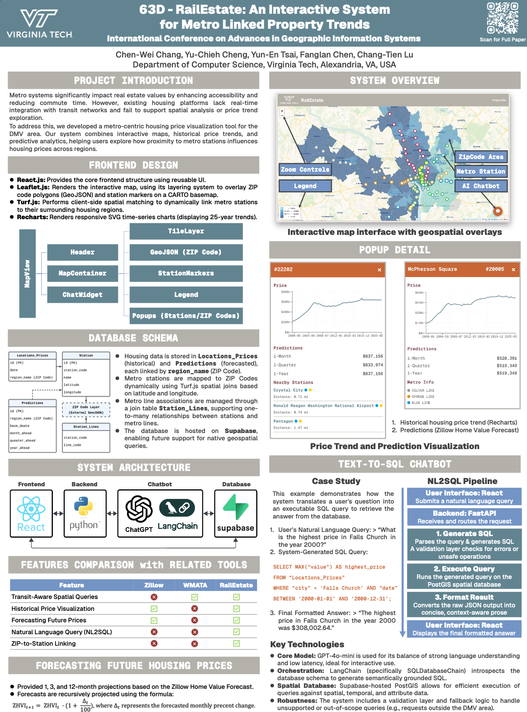

01 · Geospatial AI
RailEstate
A transit-aware housing intelligence platform that makes 25 years of Washington metropolitan property data searchable through maps, charts, and natural language.
- Problem
- Property trends and transit access lived across disconnected datasets and required SQL expertise.
- Build
- React, Leaflet, PostGIS, Supabase, Python, forecasting, and a schema-validated NL2SQL agent.
- Research
- ACM SIGSPATIAL paper